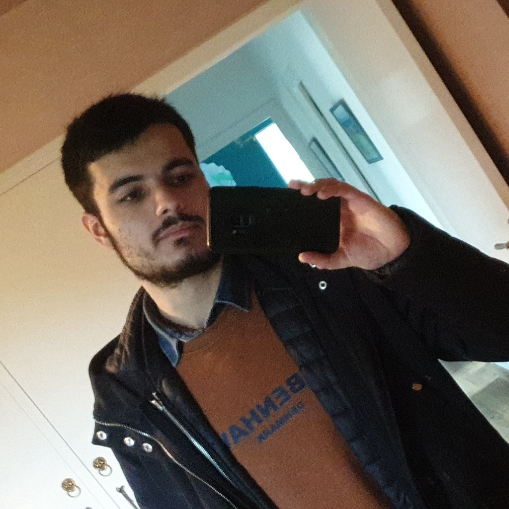

Bienvenue !
Âgé de 24 ans et titulaire du BAC Sciences et Technologies du Management et de Gestion – spécialité : Systèmes d’Informations et de Gestion (STMG -SIG), j’aspire à rentrer dans le monde du travail et plus précisément celui de développeur web.
| Mon CV | Expériences / Formations
- Formation développeur back-end à l'Institut Marie-Thérèse Solacroup à Dinard (Bretagne 2022-2023).
- Formation intégrateur front-end à l’Institut Marie-Thérèse Solacroup à Dinard (Bretagne 2021-2022).
- Stage de 2 semaines chez Interencheres situé à Vern-sur-Seiche (Bretagne 2020).
- Apprenti Boulanger pendant 3 mois à Château-Malo (Bretagne 2019).
- Terminale STMG option SIG au Lycée Jean Rostand à Caen (Normandie 2016-2017).
Compétences


Mes projets
Actuellement en formation développeur back-end à l’Institut Marie Thérèse Solacroup à Dinard , j’aspire à me perfectionner dans ce domaine. Avec la formation front-end et back-end, j’aimerais devenir développeur full stack et pouvoir être en freelance.